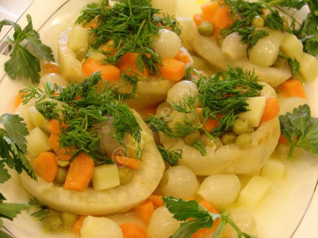

Yemek Tariflerine Hoş Geldiniz
Anasayfa
Çorbalar
Ana Yemekler
Salatalar
Mezeler

Zeytinyağlı Kereviz
Malzemeler:
- 3 adet kereviz
- 1 adet büyük boy soğan
- 2 adet havuç
- 1 adet patates
- 1 adet portakal suyu
- 1 çay bardağı zeytinyağı
- 1 tatlı kaşığı toz şeker
- 1 tatlı kaşığı tuz
- 1 su bardağı su
Üzeri için:
Yapılışı
-
Kerevizleri hazırlayın:
Kerevizlerin kabuklarını soyun, kararmamaları için limonlu suya koyun.
-
Sebzeleri doğrayın:
Soğanı yemeklik doğrayın, havuçları halka halka kesin, patatesi küp şeklinde doğrayın.
-
Tencereye alın:
Zeytinyağını tencereye ekleyin, önce soğanları biraz kavurun. Ardından havuçları ekleyip birkaç
dakika daha çevirin.
-
Kereviz ve patatesi ekleyin:
Doğranmış kerevizleri ve patatesleri ekleyin. Üzerine portakal suyu, limon suyu, şeker, tuz ve
suyu ilave edin.
-
Pişirin:
Tencerenin kapağını kapatın, kısık ateşte sebzeler yumuşayana kadar pişirin (yaklaşık 25–30 dakika).
-
Dinlendirin:
Yemek oda sıcaklığına geldikten sonra buzdolabında soğutun.
-
Servis edin:
Üzerine ince doğranmış dereotu serpip soğuk servis yapın.
👉 Bu tarifle kerevizin hafif tatlı, aromatik ve çok ferah bir lezzetini elde edersiniz.